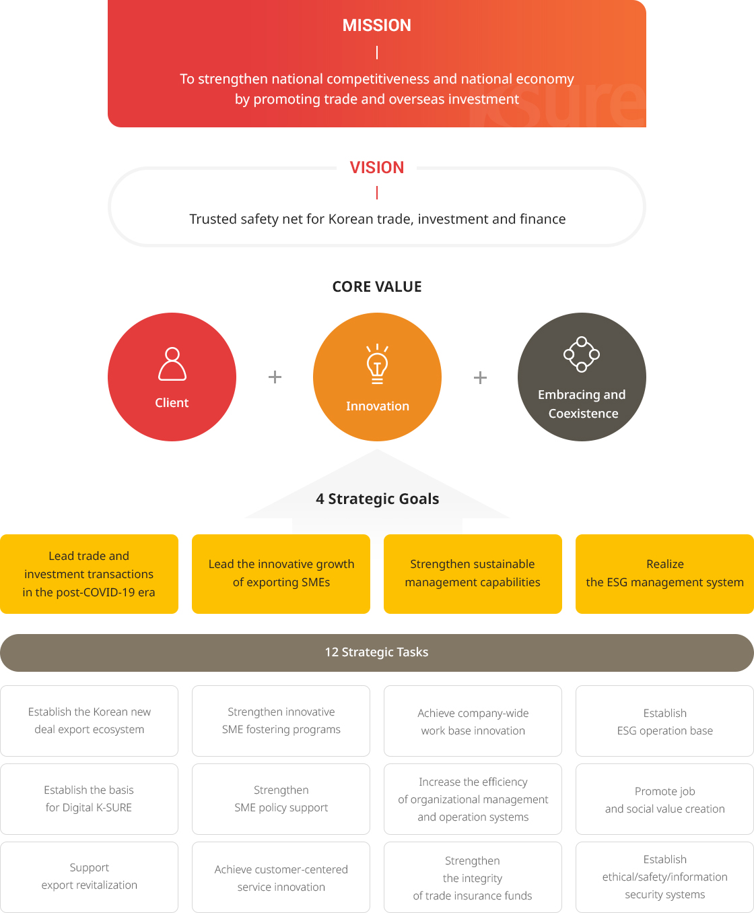
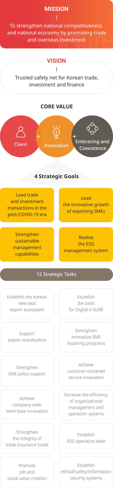

Vision


- Mission
- To strengthen national competitiveness and national economy by promoting trade and overseas investment
- Vision
- Trusted safety net for Korean trade, investment and finance
- CORE VALUE
- Client
- Innovation
- Embracing and Coexistence
- 4 Strategic Goals
- Lead trade and investment transactions in the post-COVID-19 era
- Lead the innovative growth of exporting SMEs
- Strengthen sustainable management capabilities
- Realize the ESG management system
- 12 Strategic Tasks
- Establish the Korean new deal export ecosystem
- Strengthen innovative SME fostering programs
- Achieve company-wide work base innovation
- Establish ESG operation base
- Establish the basis for Digital K-SURE
- Strengthen SME policy support
- Increase the efficiency of organizational management and operation systems
- Promote job and social value creation
- Support export revitalization
- Achieve customer-centered service innovation
- Strengthen the integrity of trade insurance funds
- Establish ethical/safety/information security systems